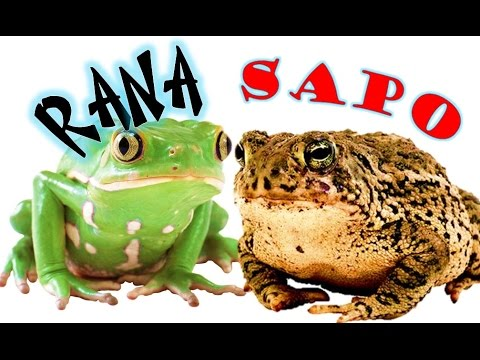

¿QUE SON LAS RANAS Y SAPOS?
Los sapos y ranas son ambos familias de anfibios pertenecientes al orden de los anuros. Todos podemos hacernos fácilmente una imagen mental de estos animales al mencionarlos, pero no siempre es fácil establecer diferencias entre ambos. Cuando hablamos de ellos, todos vemos a esas criaturas de ojos saltones y fuertes patas traseras, que se desplazan saltando de un lado a otro. Sin embargo, ¿es correcta esta concepción? ¿Hay diferencias importantes entre ranas y sapos?
